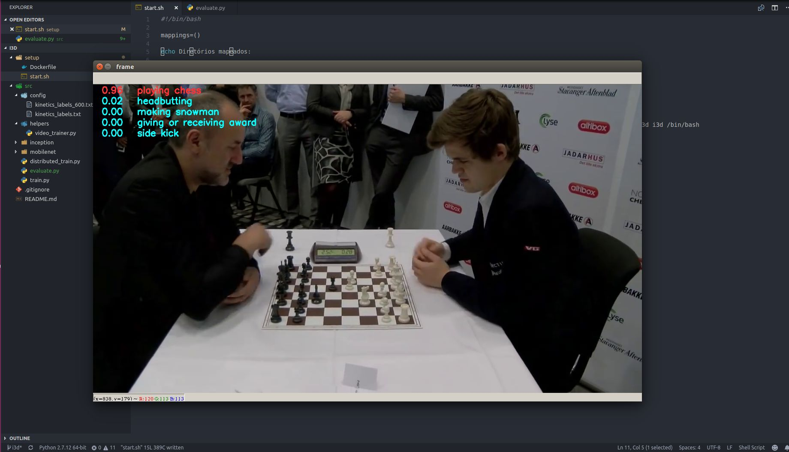
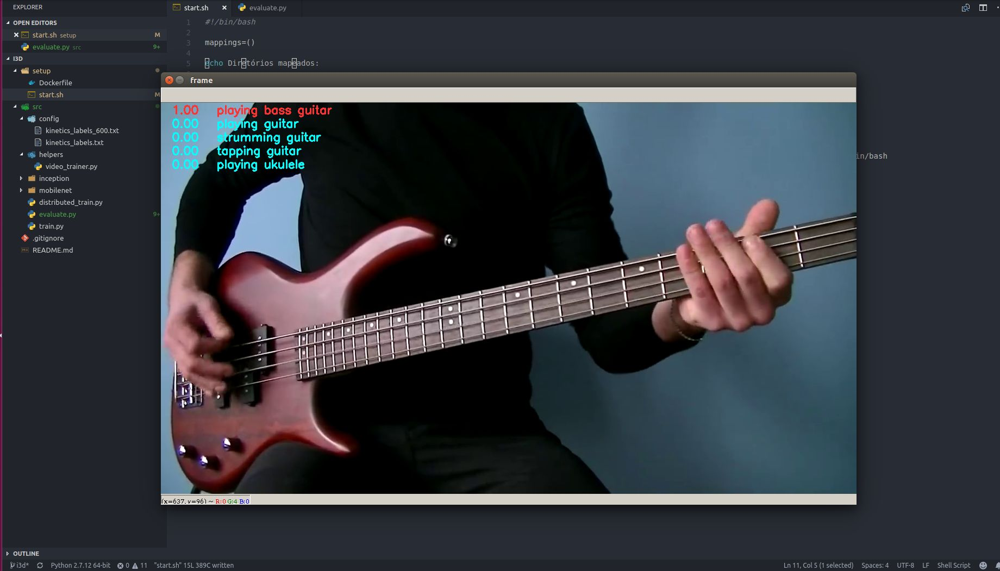
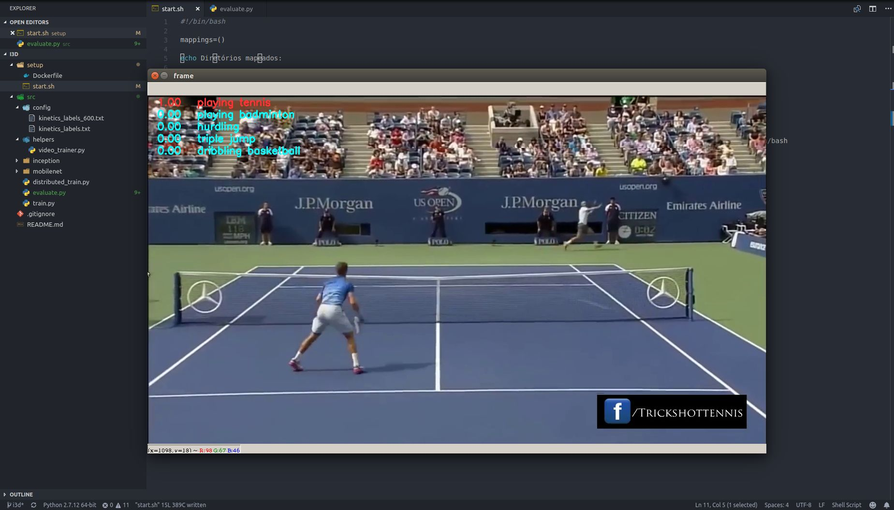
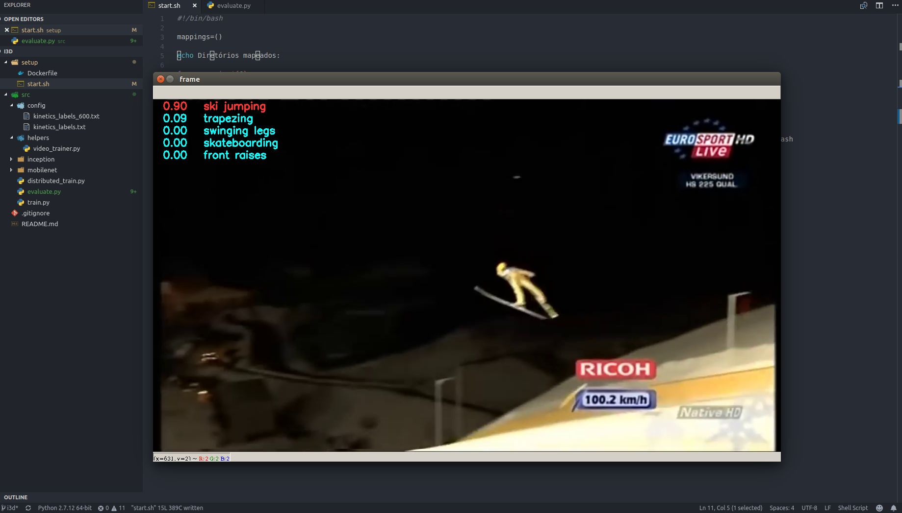

Oficina Video Analytics
I3D - Quo Vadis, Action Recognition? A New Model and the Kinetics Dataset
Matheus Pedroza
Atividades desenvolvidas - inferência
- Conversão do modelo I3D para Tensorflow
- Criação de scripts para leitura dos modelos pré-treinados no dataset Kinetics
- Criação de funções de pré-processamento dos vídeos
- Cálculo do optical flow
Atividades desenvolvidas - inferência
Exemplo de inferência em vídeo

Exemplo de inferência em vídeo

Exemplo de inferência em vídeo

Exemplo de inferência em vídeo

Atividades desenvolvidas - treinamento
- Criação de scrips para reprodução do data augmentation usado no artigo do I3D
- Criação de scripts de treinamento (transfer learning) para o dataset HMDB-51
- Criação de scripts para treinamento distribuído (várias GPUs em vários servers)
Atividades desenvolvidas treinamento
- O modelo foi treinado no dataset HMDB-51 a partir dos pesos gerados pelo treinamento no Kinetics
- Foram utilizadas 4 GPUs (TitanX Pascal), por 3600 iterações com parâmetros idênticos aos descritos no artigo
do I3D
- O treinamento usando 4 GPUs em um modelo distribuído demorou cerca de 1 hora
- Os resultado foi 79% de accuracy no validation set (os autores reportam 80.7 de accuracy em
5000 iterações)
Atividades desenvolvidas - sem resultados
-
Conversão da rede Mobilenet (V1) para 3D
- Os pesos da rede Mobilenet (treinados no dataset Imagenet) foram inflados e convertidos para um modelo 3D
- O modelo funciona no caso do boring video - descrito no artigo do I3D
- Um vídeo consistindo de N imagens idênticas deve gerar o mesmo resultado N vezes para uma rede
inflada a partir de uma rede 2D
Atividades desenvolvidas sem resultados
-
Conversão da rede Mobilenet (V1) para 3D
- Porém, devido aos tipos de camadas e estrutura da rede, não foi possível inicialmente realizar o treinamento
por falta de memória (OOM)
- O problema pode ser devido ao tamanho do batch size usado (6 vídeos de 64 frames), à estrutura do gradiente
da rede, ao tamanho da entrada, etc
Atividades desenvolvidas sem resultados
-
Conversão dos modelos em 3D para mobile ou WEB
- O Tensorflow possui algumas facilidades para exportar um modelo treinado para aplicativos móveis (TFLite) ou para WEB (TFJS)
- Porém, nenhuma das ferramentes para a conversão dos modelos possuem no momento suporte para convolução 3D
- A priori a implementação seria bastante complexa, o que inviabiliza a exportação nesse momento